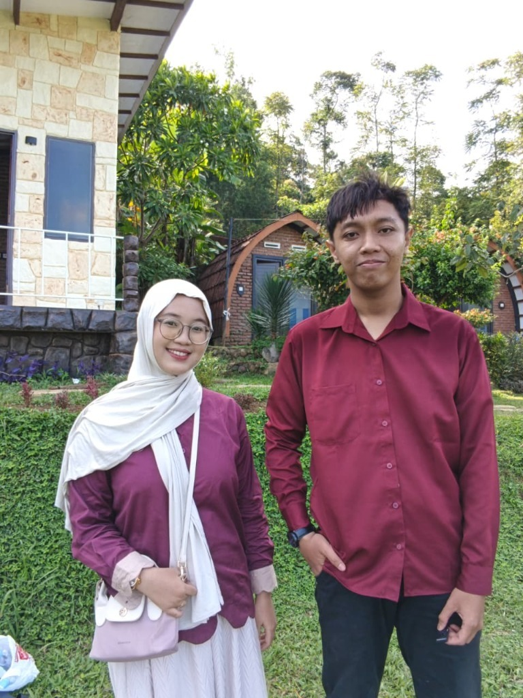
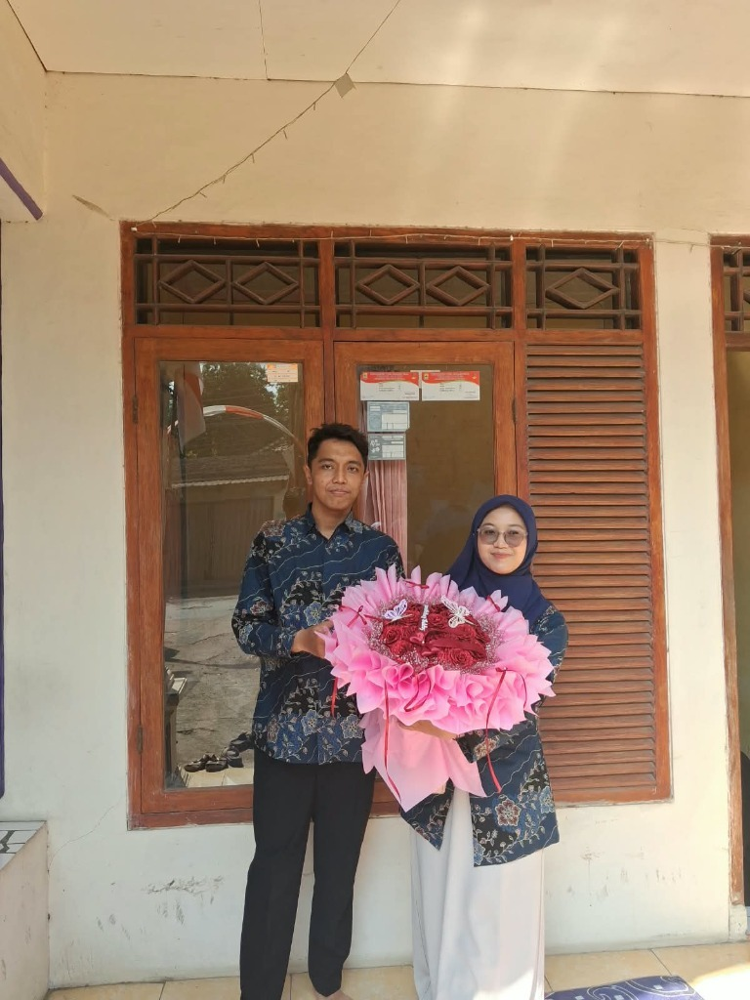
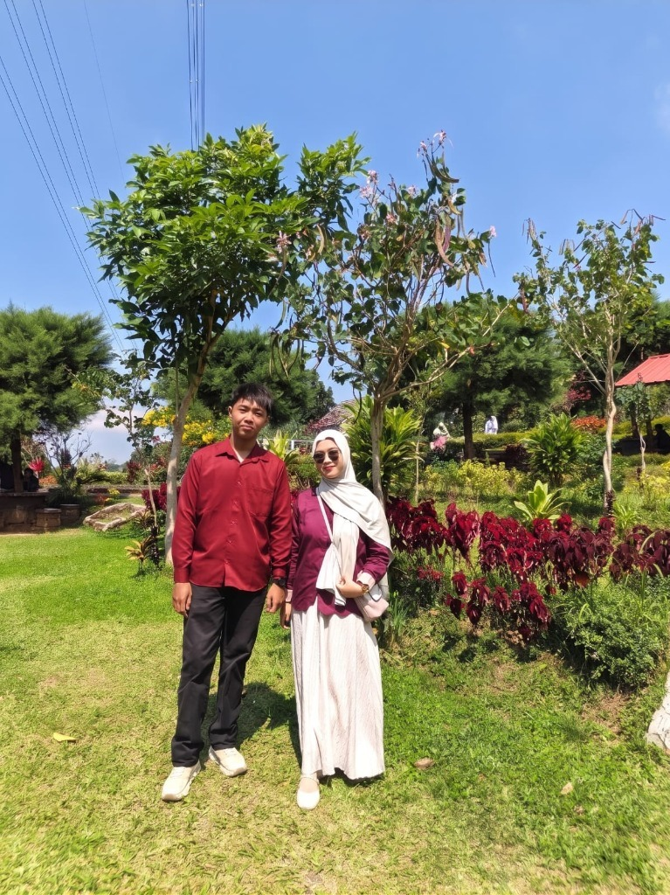
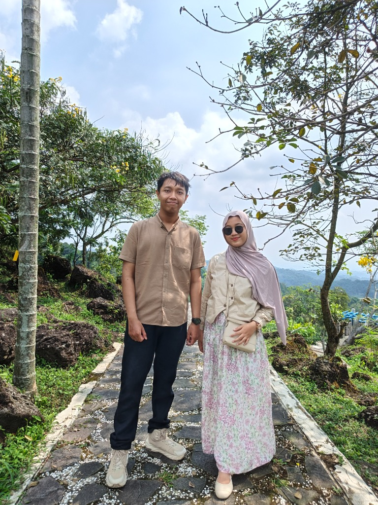
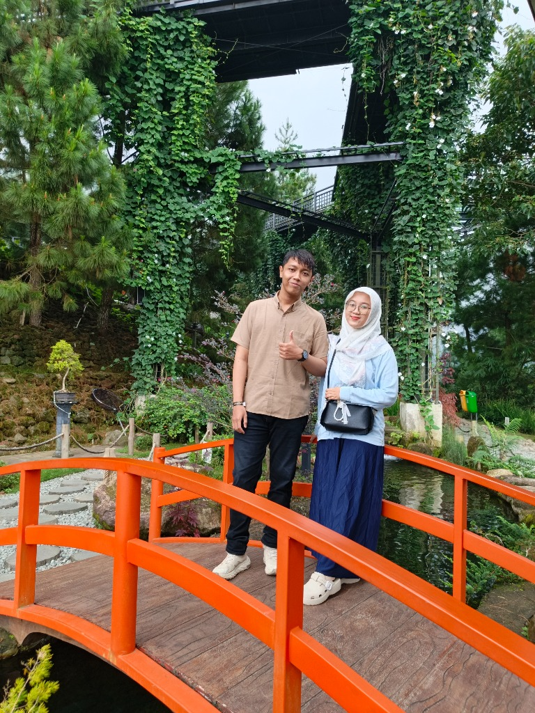
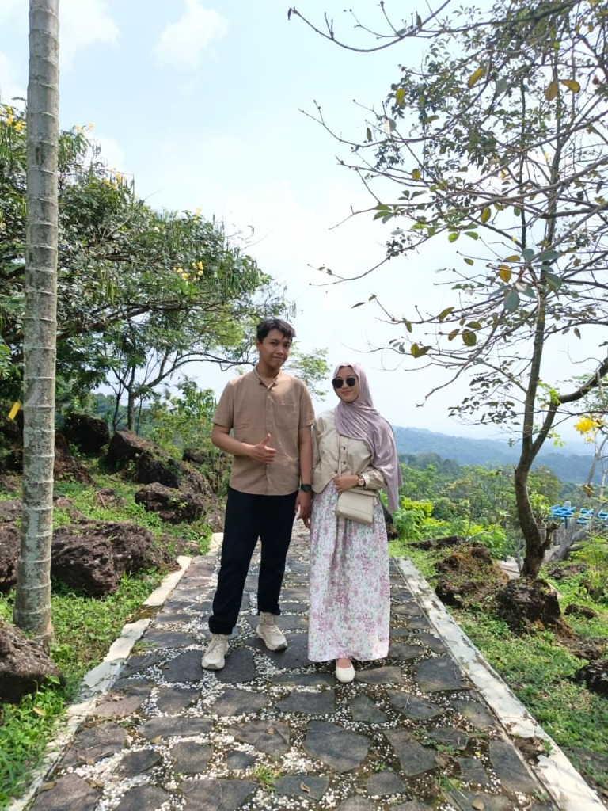

Siti Riani
Putri dari Alm. Bapak Radi & Ibu Sri Mulyati
Potret kebahagiaan Riani & Rafly — ketuk foto untuk memperbesar

🔍 Perbesar
🔍 Perbesar
🔍 Perbesar
🔍 Perbesar
🔍 Perbesar
🔍 PerbesarDoa restu Bapak/Ibu/Saudara/i merupakan karunia terindah bagi kami. Namun apabila ingin memberikan tanda kasih, dapat melalui rekening atau e-wallet berikut:
081395968281
a.n. Muhamad Rafly Kristiadi
1340028917462
a.n. Muhamad Rafly Kristiadi
082129034899
a.n. Siti Riani
Konfirmasi kehadiran serta tuliskan doa & ucapan hangat untuk kedua mempelai
Merupakan suatu kehormatan dan kebahagiaan bagi kami apabila Bapak/Ibu/Saudara/i berkenan hadir untuk memberikan doa restu kepada kedua mempelai. Atas kehadiran dan doa restunya, kami ucapkan terima kasih.
Kami yang berbahagia,
Keluarga Besar
Alm. Bapak Radi
& Ibu Sri Mulyati
Keluarga Besar
Bapak Ahyadi
& Ibu Ine Kristiati